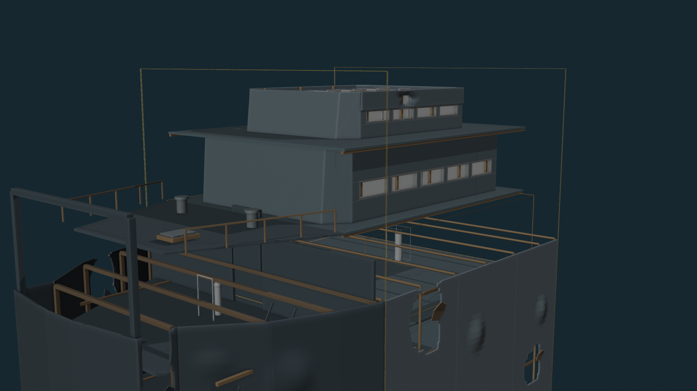
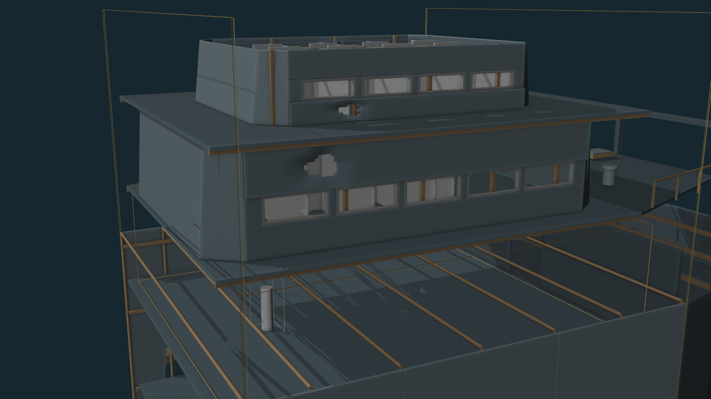
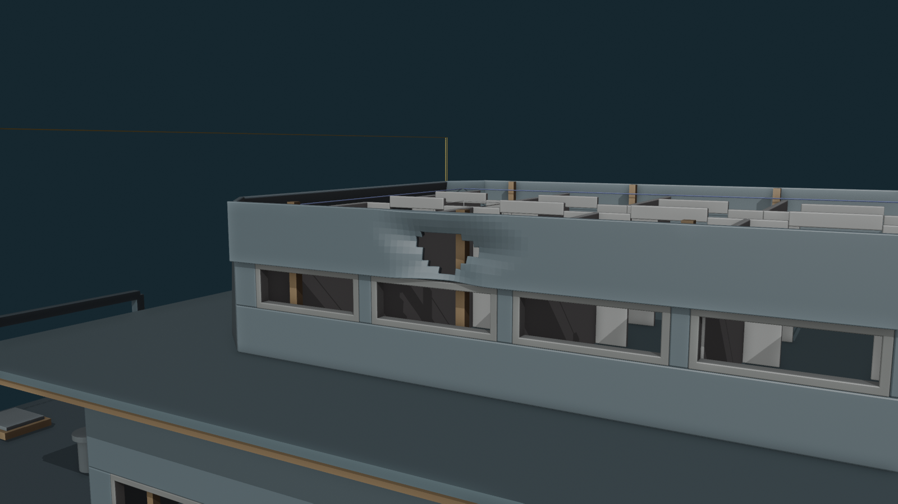
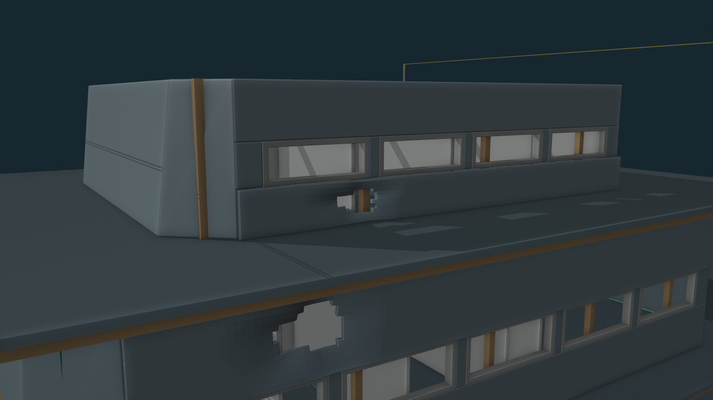
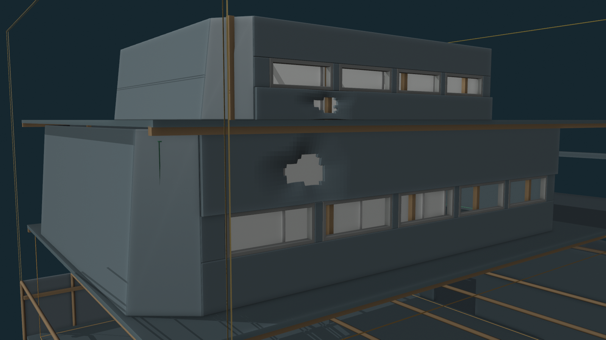
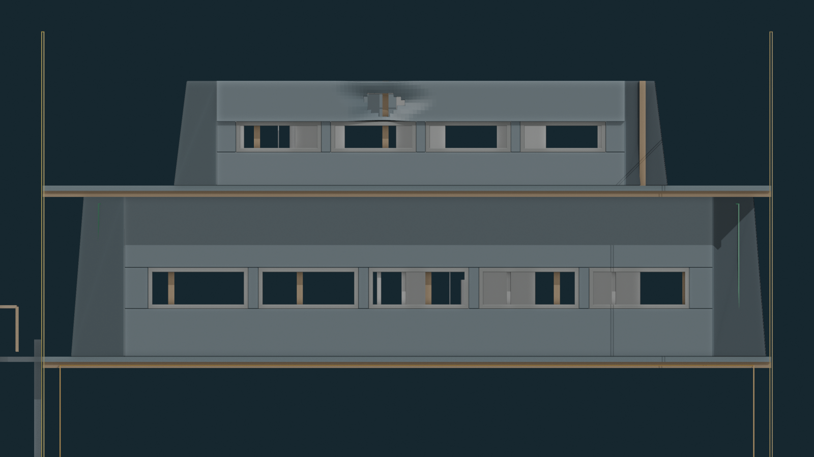
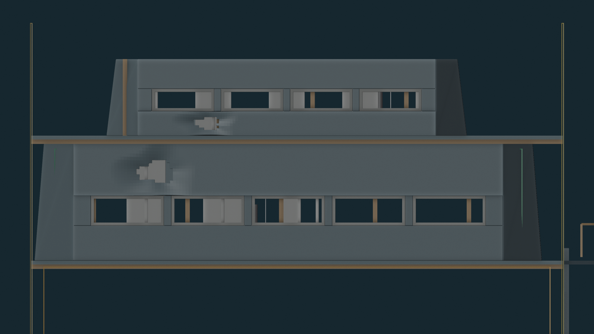

Blender QA PASS
Real dent/puncture zones: 3.
Upper port: 1 · upper starboard: 1 · main starboard: 1.
Loose passenger-house plates visible: NONE.
Glazing objects: NONE.
Maximum inward dent depth: 0.28 m.
B1 main / B1 upper / B2 lounge / B3 vehicle route intrusion: NONE.
Locked hull/decks/frames changed: NO.
V09 real window openings preserved: YES.
Overall


Upper passenger-house dent holes


Main passenger-house dent hole

Profiles


Current Gate
PASS / FAIL / changes on V12 dented-wall damage. On PASS, I will run a fresh structure-only Unreal import/collision/route/opening QA from V12.